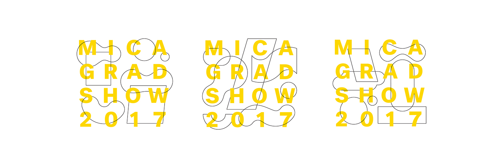
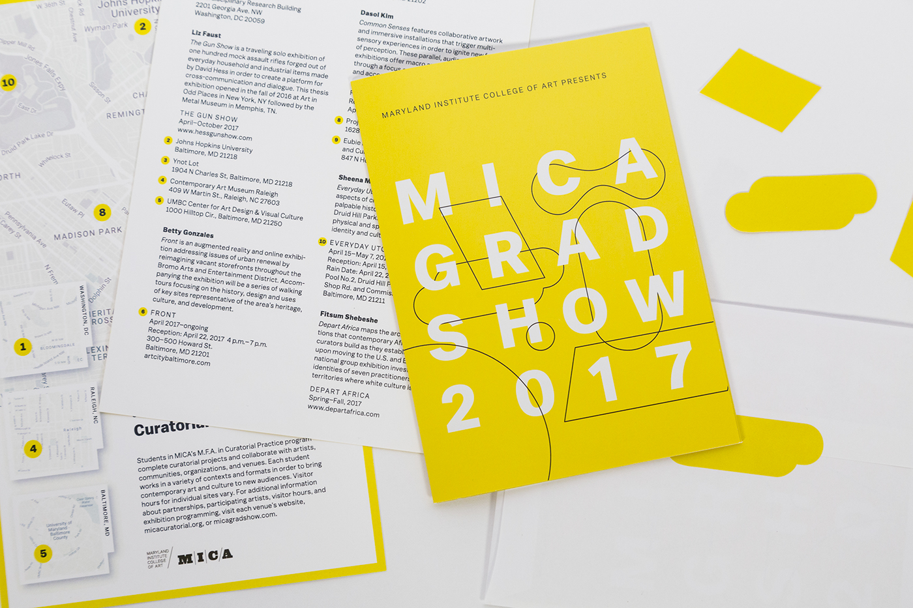
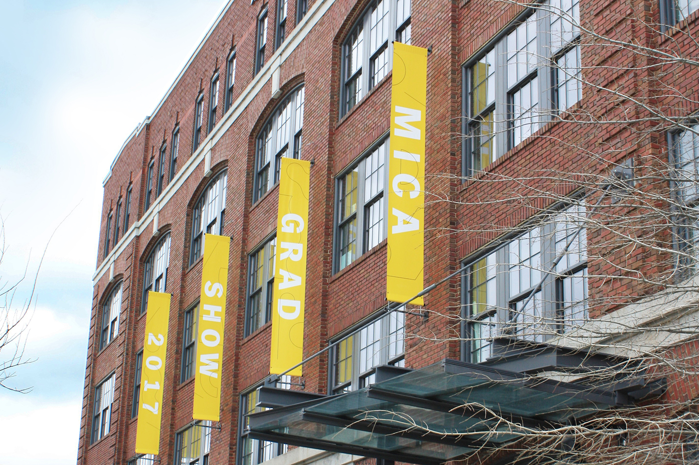
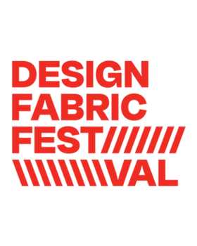

MICA Grad Show 2017
MICA Grad Show 2017, an identity that connects and celebrates the practices of different departments at MICA that includes painting, sculpture, photography, graphic design, illustration and filmmaking.
2018
- Client : Maryland Institute College of Art (MICA)
- Role: Brand Designer
- Mentor : Jennifer Cole Phillips
- Designers: Claire Moore, Erica Holeman Ninad Kale
- Typeface: Balto by Type Supply
- Awards: Adobe Design Achievement Award, HOW International Award

Face of Peace, Picasso, unknown year

Takehiko Mizutani, material study from the preliminary course,1927 / Bauhaus-Archiv Berlin
As Ellen Lupton and Abbott Miller explain in their book ABC’s of the Bauhaus, “part of the Bauhaus Legacy is the attempt to identify a ‘language of vision,’ a code of abstract forms...” Our own “code” can be divided into two types of forms: basic geometric shapes represent the solid theory taught at MICA; organic shapes represent the passion, originality, drive, and spirit that give all art life.

As a representation of 16 different graduate programs, it was important that this identity system highlights connections between all MICA artists.


The website was designed in a way that would easily provide the schedule and the students that have been graduating that year.

One of the major features that was added during this year’s gradshow website was the showcase of student portfolios. It served as a great repository of student information for company recruiters.

Collaterals across different formats.

Environmental Signage

More from Visual Identity:
-
Design Fabric Festival
 -
SEED